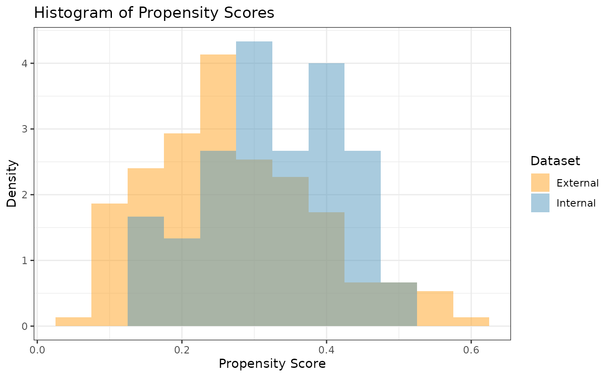
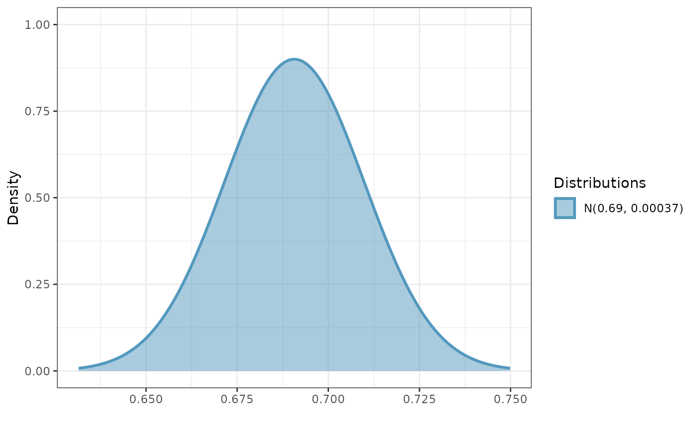
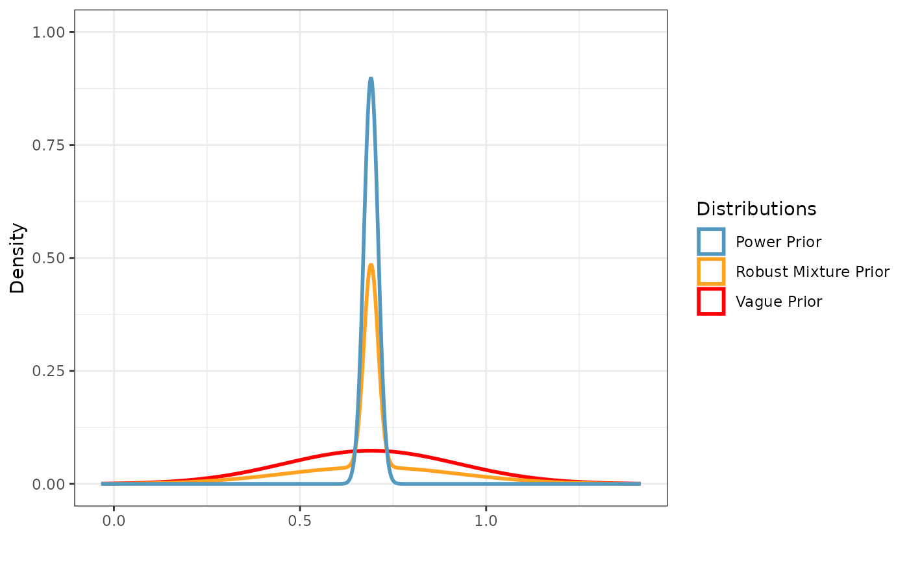

Introduction
In this example, we illustrate how to use Bayesian dynamic borrowing (BDB) with the inclusion of inverse probability weighting to balance baseline covariate distributions between external and internal datasets (Psioda et al., 2025). This particular example considers a hypothetical trial with a cross sectional normal outcome and a known standard deviation (SD) in each treatment arm (external control arm and both internal arms), and our objective is to use BDB with IPWs to construct a posterior distribution for the control mean .
Data Description
We will use simulated internal and external datasets from the package where each dataset has a normally distributed response variable and four baseline covariates which we will balance.
The external control dataset has a sample size of 150 participants, and the distributions of the four covariates are as follows:
Covariate 1: normal with a mean and standard deviation of approximately 50 and 10, respectively
Covariate 2: binary (0 vs. 1) with approximately 20% of participants with level 1
Covariate 3: binary (0 vs. 1) with approximately 60% of participants with level 1
Covariate 4: binary (0 vs. 1) with approximately 30% of participants with level 1
The internal dataset has 120 participants with 60 participants in each of the control and active treatment arms. The covariate distributions of each arm are as follows:
Covariate 1: normal with a mean and standard deviation of approximately 55 and 8, respectively
Covariate 2: binary (0 vs. 1) with approximately 30% of participants with level 1
Covariate 3: binary (0 vs. 1) with approximately 50% of participants with level 1
Covariate 4: binary (0 vs. 1) with approximately 30% of participants with level 1
We assume the standard deviations of both the external and internal response data are known and equal to 0.15.
library(tibble)
library(distributional)
library(dplyr)
#>
#> Attaching package: 'dplyr'
#> The following objects are masked from 'package:stats':
#>
#> filter, lag
#> The following objects are masked from 'package:base':
#>
#> intersect, setdiff, setequal, union
library(ggplot2)
set.seed(1234)
summary(int_norm_df)
#> subjid cov1 cov2 cov3
#> Min. : 1.00 Min. :32.00 Min. :0.0000 Min. :0.0000
#> 1st Qu.: 30.75 1st Qu.:49.00 1st Qu.:0.0000 1st Qu.:0.0000
#> Median : 60.50 Median :55.00 Median :0.0000 Median :1.0000
#> Mean : 60.50 Mean :54.16 Mean :0.2833 Mean :0.5083
#> 3rd Qu.: 90.25 3rd Qu.:59.00 3rd Qu.:1.0000 3rd Qu.:1.0000
#> Max. :120.00 Max. :69.00 Max. :1.0000 Max. :1.0000
#> cov4 trt y
#> Min. :0.00 Min. :0.0 Min. :-0.009368
#> 1st Qu.:0.00 1st Qu.:0.0 1st Qu.: 0.515350
#> Median :0.00 Median :0.5 Median : 0.683271
#> Mean :0.25 Mean :0.5 Mean : 0.697266
#> 3rd Qu.:0.25 3rd Qu.:1.0 3rd Qu.: 0.869011
#> Max. :1.00 Max. :1.0 Max. : 1.399801
summary(ex_norm_df)
#> subjid cov1 cov2 cov3 cov4
#> Min. : 1.00 Min. :27.00 Min. :0.0000 Min. :0.0 Min. :0.0
#> 1st Qu.: 38.25 1st Qu.:42.00 1st Qu.:0.0000 1st Qu.:0.0 1st Qu.:0.0
#> Median : 75.50 Median :48.00 Median :0.0000 Median :0.5 Median :0.0
#> Mean : 75.50 Mean :49.03 Mean :0.2267 Mean :0.5 Mean :0.3
#> 3rd Qu.:112.75 3rd Qu.:55.00 3rd Qu.:0.0000 3rd Qu.:1.0 3rd Qu.:1.0
#> Max. :150.00 Max. :75.00 Max. :1.0000 Max. :1.0 Max. :1.0
#> y
#> Min. :-0.2778
#> 1st Qu.: 0.3669
#> Median : 0.5921
#> Mean : 0.5893
#> 3rd Qu.: 0.8277
#> Max. : 1.3438
sd_external_control <- 0.15
sd_internal_control <- 0.15
sd_internal_treated <- 0.15Propensity Scores and Inverse Probability Weights
With the covariate data from both the external and internal datasets,
we can calculate the propensity scores and ATT inverse probability
weights (IPWs) for the internal and external control participants using
the calc_prop_scr function. This creates a propensity score
object which we can use for calculating an inverse probability weighted
power prior in the next step.
Note: when reading external and internal datasets into
calc_prop_scr, be sure to include only the arms in which
you want to balance the covariate distributions (typically the internal
and external control arms). In this example, we want to balance
the covariate distributions of the external control arm to be similar to
those of the internal control arm, so we will exclude the internal
active treatment arm data from this function.
ps_model <- ~ cov1 + cov2 + cov3 + cov4
ps_obj <- calc_prop_scr(internal_df = filter(int_norm_df, trt == 0),
external_df = ex_norm_df,
id_col = subjid,
model = ps_model)
ps_obj
#>
#> ── Model ───────────────────────────────────────────────────────────────────────
#> • cov1 + cov2 + cov3 + cov4
#>
#> ── Propensity Scores and Weights ───────────────────────────────────────────────
#> • Effective sample size of the external arm: 61
#> # A tibble: 150 × 4
#> subjid Internal `Propensity Score` `Inverse Probability Weight`
#> <int> <lgl> <dbl> <dbl>
#> 1 1 FALSE 0.181 0.221
#> 2 2 FALSE 0.351 0.542
#> 3 3 FALSE 0.456 0.840
#> 4 4 FALSE 0.115 0.130
#> 5 5 FALSE 0.364 0.572
#> 6 6 FALSE 0.377 0.604
#> 7 7 FALSE 0.131 0.150
#> 8 8 FALSE 0.259 0.349
#> 9 9 FALSE 0.235 0.308
#> 10 10 FALSE 0.207 0.261
#> # ℹ 140 more rows
#>
#> ── Absolute Standardized Mean Difference ───────────────────────────────────────
#> # A tibble: 4 × 3
#> covariate diff_unadj diff_adj
#> <chr> <dbl> <dbl>
#> 1 cov1 0.506 0.104
#> 2 cov2 0.0548 0.104
#> 3 cov3 0.0667 0.00115
#> 4 cov4 0.275 0.00266In order to check the suitability of the external data, we can create
a variety of diagnostic plots. The first plot we might want is a
histogram of the overlapping propensity score distributions from both
datasets. To get this, we use the prop_scr_hist function.
This function takes in the propensity score object made in the previous
step, and we can optionally supply the variable we want to look at
(either the propensity score or the IPW). By default, it will plot the
propensity scores. Additionally, we can look at the densities rather
than histograms by using the prop_scr_dens function. When
looking at the IPWs with either the histogram or the density functions,
it is important to note that only the IPWs for external control
participants will be shown because the ATT IPWs for all internal control
participants are equal to 1.
prop_scr_hist(ps_obj)
prop_scr_dens(ps_obj, variable = "ipw")
The final plot we might want to look at is a love plot to visualize
the absolute standardized mean differences (both unadjusted and adjusted
by the IPWs) of the covariates between the internal and external data.
To do this, we use the prop_scr_love function. Like the
previous function, the only required parameter for this function is the
propensity score object, but we can also provide a location along the
x-axis for a vertical reference line.
prop_scr_love(ps_obj, reference_line = 0.1)
Inverse Probability Weighted Power Prior
Now that we have created and assessed our propensity score object, we
can read it into the calc_power_prior_norm function to
calculate a normal inverse probability weighted power prior for
.
To calculate the power prior, we need to supply the following
information:
weighted object (the propensity score object we created above)
response variable name (in this case )
initial prior, in the form of a normal distributional object (e.g., )
SD of the external control response data, assumed known
The prior and the external control SD are optional. If no prior is
provided, an improper uniform prior will be used for the initial prior;
i.e.,
.
If no external control SD or initial prior are specified (i.e., both the
prior and external_sd arguments are set as
NULL), then a non-standardized
power prior will be created (not covered in this vignette). In this
example, we define the initial prior to be a vague normal distribution
with a mean 0.5 and SD 10.
Once we have a power prior, we might want to plot it. To do that, we
use the plot_dist function.
pwr_prior <- calc_power_prior_norm(ps_obj,
response = y,
prior = dist_normal(0.5, 10),
external_sd = sd_external_control)
plot_dist(pwr_prior)
Inverse Probability Weighted Robust Mixture Prior
We can robustify the normal power prior for
by adding a vague component to create a robust mixture prior (RMP). We
define the vague component to be a normal distribution with the same
mean as the power prior and a variance that is
times greater than the variance of the power prior, where
denotes the sample size of the external control arm. To construct the
RMP with two components, we use the robustify_norm function
and place 0.5 weight on each component. The two components of the
resulting RMP are labeled as “informative” and “vague”.
As an alternative to using robustify_norm, we can
instead use the dist_mixture function to create a mixture
prior with an arbitrary number of normal and/or
components. If any component of the prior is a
distribution, the component will be approximated with the mixture of two
normal distributions.
n_external <- nrow(ex_norm_df)
mix_prior <- robustify_norm(pwr_prior, n_external, weights = c(0.5, 0.5))
plot_dist("Power Prior" = pwr_prior,
"Vague Prior" = dist_normal(mean = mix_means(mix_prior)["vague"],
sd = mix_sigmas(mix_prior)["vague"]),
"Robust Mixture Prior" = mix_prior)
Posterior Distributions
To create a posterior distribution for
,
we can pass the resulting RMP to the calc_post_norm
function. By assuming the SD of the internal response data to be known,
the resulting posterior distribution is also a mixture of normal
components (the case when the SD is unknown is not covered in this
vignette).
Note: when reading internal data directly into
calc_post_norm, be sure to include only the arm of interest
(e.g., the internal control arm if creating a posterior distribution for
).
post_control <- calc_post_norm(filter(int_norm_df, trt == 0),
response = y,
prior = mix_prior,
internal_sd = sd_internal_control)
plot_dist(post_control)
Next, we create a posterior distribution for the mean of the active
treatment arm
by reading the internal data for the corresponding arm into the
calc_post_norm function while assuming the SD of the
internal active treatment arm to be equal to 0.15. In this case, we use
the vague component of the RMP as our normal prior.
As noted earlier, be sure to read in only the data for the internal active treatment arm while excluding the internal control data.
post_treated <- calc_post_norm(internal_data = filter(int_norm_df, trt == 1),
response = y,
prior = dist_normal(mean = mix_means(mix_prior)["vague"],
sd = mix_sigmas(mix_prior)["vague"]),
internal_sd = sd_internal_treated)
plot_dist("Control Posterior" = post_control,
"Treatment Posterior" = post_treated)
Posterior Summary Statistics and Samples
With our posterior distributions for
and
saved as distributional objects, we can use several functions from the
distributional package to calculate posterior summary
statistics and sample from the distributions. Using the posterior
distribution for
as an example, we illustrate several of these functions below.
- Posterior summary statistics:
c(mean = mean(post_control),
median = median(post_control),
variance = variance(post_control))
#> mean median variance
#> 0.675091383 0.675734273 0.000239683- Highest density regions using the
hdrfunction:
hdr(post_control) # 95% HDR
#> <hdr[1]>
#> [1] [0.6442579, 0.7052676]95
hdr(post_control, 90) # 90% HDR
#> <hdr[1]>
#> [1] [0.650438, 0.7006585]90- Credible intervals using either the
hilofunction or thequantilefunction:
hilo(post_control) # 95% credible interval
#> <hilo[1]>
#> [1] [0.6420707, 0.7036551]95
hilo(post_control, 90) # 90% credible interval
#> <hilo[1]>
#> [1] [0.6487183, 0.6992243]90
quantile(post_control, c(.025, .975))[[1]] # 95% CrI via quantile function
#> [1] 0.6420707 0.7036551- Posterior probabilities (e.g.,
)
using the
cdffunction:
cdf(post_control, q = .7) # Pr(theta_C < 0.7 | D)
#> [1] 0.9554074- Posterior (log) densities at a given value:
density(post_control, at = .7) # density at 0.7
#> [1] 6.659121
density(post_control, at = .7, log = TRUE) # log density at 0.7
#> [1] 1.895988In addition to calculating posterior summary statistics, we can
sample from posterior distributions using the generate
function. Here, we randomly sample 100,000 draws from the posterior
distribution for
and plot a histogram of the sample.
samp_control <- generate(x = post_control, times = 100000)[[1]]
ggplot(data.frame(samp = samp_control), aes(x = samp)) +
labs(y = "Density", x = expression(theta[C])) +
ggtitle(expression(paste("Posterior Samples of ", theta[C]))) +
geom_histogram(aes(y = after_stat(density)), color = "#5398BE", fill = "#5398BE",
position = "identity", binwidth = .01, alpha = 0.5) +
geom_density(color = "black") +
coord_cartesian(xlim = c(-0.1, 0.9)) +
theme_bw()
Similarly, we sample from the posterior distribution for .
samp_treated <- generate(x = post_treated, times = 100000)[[1]]
ggplot(data.frame(samp = samp_treated), aes(x = samp)) +
labs(y = "Density", x = expression(theta[T])) +
ggtitle(expression(paste("Posterior Samples of ", theta[T]))) +
geom_histogram(aes(y = after_stat(density)), color = "#FFA21F", fill = "#FFA21F",
position = "identity", binwidth = .01, alpha = 0.5) +
geom_density(color = "black") +
coord_cartesian(xlim = c(-0.1, 0.9)) +
theme_bw()We define our marginal treatment effect to be the difference between the active treatment mean and the control mean (i.e., ). We can obtain a sample from the posterior distribution for by subtracting the posterior sample of from the posterior sample of .
samp_trt_diff <- samp_treated - samp_control
ggplot(data.frame(samp = samp_trt_diff), aes(x = samp)) +
labs(y = "Density", x = expression(paste(theta[T], " - ", theta[C]))) +
ggtitle(expression(paste("Posterior Samples of ", theta[T], " - ", theta[C]))) +
geom_histogram(aes(y = after_stat(density)), color = "#FF0000", fill = "#FF0000",
position = "identity", binwidth = .01, alpha = 0.5) +
geom_density(color = "black") +
coord_cartesian(xlim = c(-0.1, 0.9)) +
theme_bw()Suppose we want to test the hypotheses versus . We can use our posterior sample for to calculate the posterior probability (i.e., the probability in favor of ), and we conclude that we have sufficient evidence in favor of the alternative hypothesis if .
mean(samp_trt_diff > 0)
#> [1] 0.98861We see that this posterior probability is greater than 0.975, and hence we have sufficient evidence to support the alternative hypothesis.
Using the parameters function from the
distributional package, we can extract the parameters of a
posterior distribution that consists of a single component (i.e., a
single normal distribution). For example, we can extract the mean (mu)
and standard deviation (sigma) parameters of the beta posterior
distribution for
.
parameters(post_treated)
#> mu sigma
#> 1 0.7307423 0.01929926For posterior distributions that are a mixture of normal components,
we can extract the means and standard deviations of each component using
the mix_means and mix_sigmas functions,
respectively.
mix_means(post_control) # means of each normal component
#> informative vague
#> 0.6772442 0.6636995
mix_sigmas(post_control) # SDs of each normal component
#> informative vague
#> 0.01361736 0.01929926We can also use the parameters function to extract the
mixture weights associated with the normal components of the posterior
distribution for
.
parameters(post_control)$w[[1]]
#> informative vague
#> 0.8410606 0.1589394Lastly, we calculate the effective sample size of the posterior distribution for using the method by Pennello and Thompson (2008). To do so, we first must construct the posterior distribution of without borrowing from the external control data (e.g., using a vague prior).
post_control_no_brrw <- calc_post_norm(filter(int_norm_df, trt == 0),
response = y,
prior = dist_normal(mean = mix_means(mix_prior)["vague"],
sd = mix_sigmas(mix_prior)["vague"]),
internal_sd = sd_internal_control)
n_int_ctrl <- nrow(filter(int_norm_df, trt == 0)) # sample size of internal control arm
var_no_brrw <- variance(post_control_no_brrw) # post variance of theta_C without borrowing
var_brrw <- variance(post_control) # post variance of theta_C with borrowing
ess <- n_int_ctrl * var_no_brrw / var_brrw # effective sample size
ess
#> [1] 93.23853References
Psioda, M. A., Bean, N. W., Wright, B. A., Lu, Y., Mantero, A., and Majumdar, A. (2025). Inverse probability weighted Bayesian dynamic borrowing for estimation of marginal treatment effects with application to hybrid control arm oncology studies. Journal of Biopharmaceutical Statistics, 1–23. DOI: 10.1080/10543406.2025.2489285.